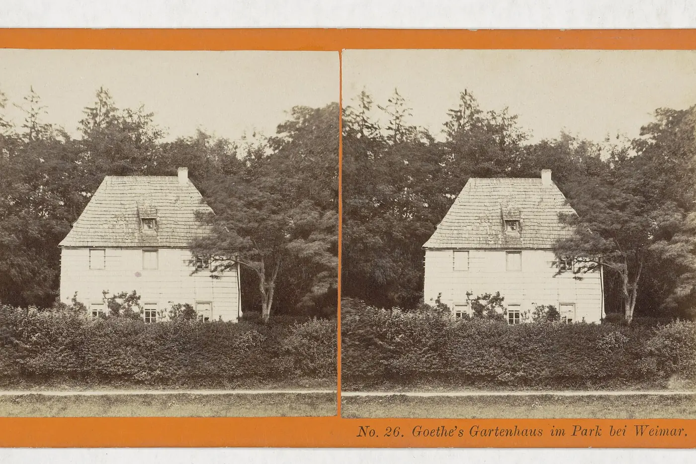

Galerie
Fotos und Zeichnungen in fünf Alben. Tippen oder klicken Sie auf ein Bild, dann wird es groß.

Kindheit und Jugend
Alte Fotos aus der Familie: Kinder, junge Leute, Ausflüge.
Kriegszeit
Frühjahr 1945: die Flucht aus Neubrandenburg über Güstrow nach Lübeck.
Gemeinsame Jahre
Ingrid und Wolfgang Timpel zu Hause, im Garten, am Meer und mit der Familie.
Restaurierung und Museum
Wolfgang Timpels Arbeit: das Museum in Weimar, Grabungen, Scherben, die wieder ein Gefäß werden.
Zeichnungen
Zeichnungen von Ingrid Timpel, Kohle und Bleistift auf Papier.